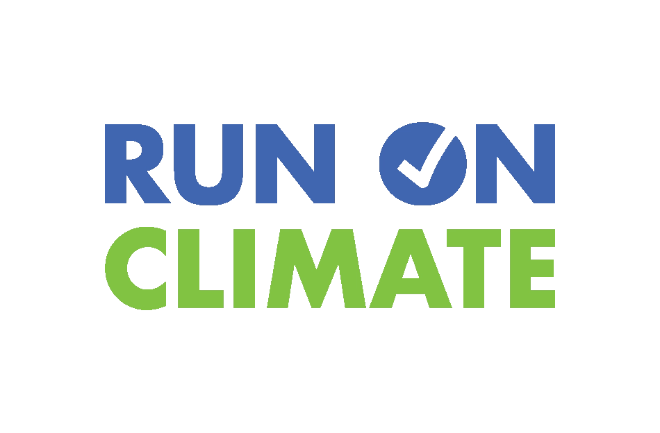

Recent Projects
Professional Experience

Team Ray Technologies
As an electrical engineering intern, I used AutoCAD Electrical to create and read electrical prints, and built electrical control panels from start to finish.
View More

Run On Climate
As a fall intern at Run On Climate, I combine my experience in social media and public relations with my passion for climate policy and science.
View More
Inspirate Earth
As an executive at Inspirate Earth, I created promotional content, planned climate education events, and wrote informational articles for the website.
View More